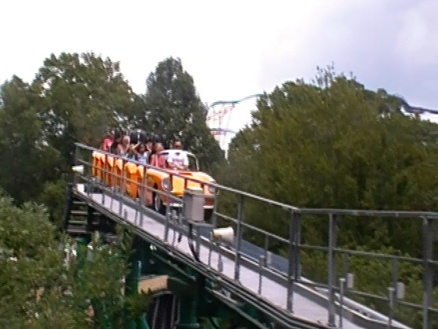

| |
Verbolten Review

We're here at Busch Gardens Williamsburg. Today's coaster we'll be reviewing is definately one of the more interesting coasters out there. Yep. We're going over Verbolten. This is interesting in many different ways. Partially in the fact that it's an indoor coaster. Partially that it really tries to pay homage to the coaster that came before it, Big Bad Wolf (Really wish I made it to BGW in time to ride that. That ride looked like a lot of fun). ='( And on top of that, this seems to be one of the best coasters that Zierer has ever made. Not my personal favorite by them, but I most certainly understand why someone would argue that Verbolten is their favorite Zierer creation. Oh, and let's not forget about this rides very fun surprise. I'm sure many of you know of it. But just in case you don't, let me get this out of the way. SPOILER ALERT: Verbolten's surprise will be revealed in this review. How does that happen? Well, let's take a ride and see. Hop in the cars (No really. You better. This ride has monterous capacity, damn near rivaling Disney. So chop chop! Hurry up!). Get in, pull down the lap bars, and try to ignore that girl with the German accent who's just giving the standard speil, but...says it in a way that REALLY makes you pay attention for some reason. With that said, we're off! Go down a small curved drop, gain a little bit of speed. Cruise through some straight track. Turn, and then BAM!!! LAUNCH!!! Straight into the building!!! We see some pretty flashing blue lights as well as some cartoon bang special effects. Cheesy, but who cares! We're having a blast! And this is all just in the initial launch! We go through what feels like a curve, and see some flashing blue lights, as well as what looks like cardboard cutouts of trees flashing before us. Ooh! Pretty! Go through a couple curves, and.....hard to tell what's going on since it's all dark and you can't see. But I'm enjoying this. We come to a stop, crawl around, and just take in where we are. The Dark Black Forest. Seriously, this should be the ride's f*cking theme song! I can't hear that song without thinking of riding Verbolten! So yeah. Just strolling through the dark black forest. Creepy music is playing, and of course, there's lightning flashing everywhere. You stop, lightning still flashing, when WHOA!!! We drop! No, not on the ride! No! The entire track itself seems to just drop 20 ft. That's really cool and all. Nothing amazing. The equivelant of jumping a Cascade Pond. But....I wanna see this technology REALLY be utilized! Can we have a ride with drop track that drops like 100 ft or so!? THAT would be cool as hell! Anyways, back to Verbolten. We then go down a small drop, back into the light, and BAM!!! ANOTHER LAUCH!!! Nothing amazing, but it's still just a ton of fun! We head through a couple banked turns, just blowing off steam and having fun. Head up another curved hill and.....we stop. Oh come on! This ride stops too much! However, if you're an old school Busch Gardens Williamsburg fan, this might seem familiar. Yep. We're at the top, about to recreate the final drop from Big Bad Wolf in an effort to pay homage to that fun ride. Once again, I REALLY wish I made it to Busch Gardens Williamsburg for that! However, we then drop down towards the Rhine River, quickly turning to the left in a banked turn, just like on Big Bad Wolf. I can't compare the two, but this is a really fun drop. We then head through some straight track before heading into another banked curve in the opposite direction. Doesn't give much laterals, but it's still A LOT of fun. Head up into a small hill. No airtime or anything. And I think we're winding down. Go through another banked turn, and glide into the brake run. So yeah. This is an intersting ride and it's REALLY good! Honestly, a lot better than I was expecting. It's sort of like a more intense version of Polar Xplorer, except this is a more mature and adult coaster. It may not be the best coaster ever, and it may not even be a superior replacement for Big Bad Wolf, but it's just a ton of fun and something that I really enjoyed and would love to ride again on my next Busch Gardens Williamsburg visit.
7/10
Location: Busch Gardens Williamsburg
Opened: 2012
Built by: Zeirer
Last Ridden: July 26, 2019
Verbolten Photos



Home
|